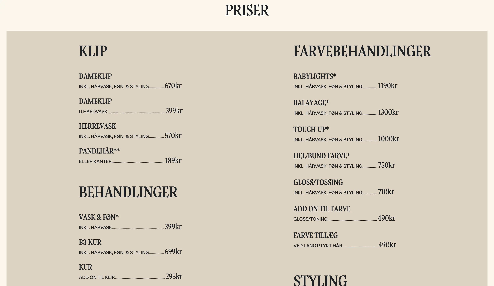

Tema 5 - Indhold
På dette tema har fokus været på videoproduktion - herunder selve videoproduktion samt præ- og postproduktion. Forud for produktionen er vi blevet introduceret for flere forskellige begreber til brug i medieverdenen.
Vi fik på temaet præsenteret to opgaver, som hhv. var et videosite og et virksomhedssite. Videositet rustede os til derefter at skulle udarbejde et redesign for en virksomhed. Det gjorde det ved, at vi dragede os erfaringer fra de forskellige stadier i produktionen, som vi kunne tage med til det næste projekt.
Videosite
Videositet
var med temaet "En person med en passion". Her interviewede jeg en bekendt, som har en
passion
for
sit arbejde som model - og sin passion for der at vise, at alle størrelser er
accepterede og
smukke som de er.
I dette projekt fik jeg udviklet mine færdigheder i de forskellige
stadier af
produktionen, men også mine færdigheder indenfor interview.
Færdig video
Virksomhedssite
Virksomhedssitet var et gruppeprojekt, som skulle indebære et redesign for en eksisterende
virksomhed - som her var min frisør. I dette projekt fik jeg både mere erfaring i
at skulle samarbejde om et kreativt projekt - alle de forskellige roller i et samarbejde, og
at
koordinere opgaver mellem hinanden.
Derudover fik jeg arbejdet videre på mine
kompetencer
indenfor
videoproduktion.
Hero-video til virksomhedssite
Forrige website
Kathrine Laurent's forrige website bar præg af en del lyserøde og hvide nuancer. Dog har hun
ændret det efter hun fik vores redesign, så derfor er dette ikke de helt gamle billeder.
Inden vi udarbejdede re-designet, havde vi en samtale med hende omkring hendes ønsker
til designet. Derudover arrangerede vi en dag, hvor vi fik lov at filme og fotografere i
hendes salon.